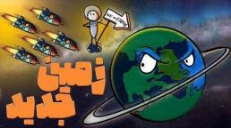

اگر زمین غیرقابل سکونت شود و مجبور شویم برویم چه میشود؟

موضوع امروز یک چیزی شبیه انیمیشن والیئی است. زمین غیرقابل سکونت شده و انسانها برای حفظ نسل مجبورند سیارهٔ مادر را ترک کنند. دلیلش میتواند جنگ بزرگ، گرم شدن بیش از حد، یا هر چیز دیگری باشد. مهم این است که ماندن دیگر ممکن نیست.
سؤال این است: اگر واقعاً مجبور شویم برویم، چه میشود؟ سفینهای که قرار است انسانها را به سیارهٔ جدید ببرد چقدر بزرگ است، چه منابعی میخواهد، چقدر سوخت میسوزاند، چقدر طول میکشد برسد، و زندگی داخلش چه شکلی است؟
یک شهر کامل در فضا
تصور کن سفینهای میخواهیم که صد هزار نفر را جا بدهد و همه چیز را برای زندگی طولانی فراهم کند. احتمالاً باید چیزی مثل سیلندر اونیل یا چنبرهٔ استنفورد باشد. این طرحها با چرخیدن دور خودشان گرانش مصنوعی میسازند.
باید جا برای زندگی، کشاورزی، انبار، تصفیهٔ آب و هوا، بیمارستان، مدرسه و حتی جای تفریح باشد. خلاصه یک شهر کامل توی فضا. برای هر نفر حداقل ۵۰ متر مربع برای زندگی و کار، و تقریباً همینقدر برای زیرساخت. یعنی حدود ۱۰۰ متر مربع برای هر نفر. برای صد هزار نفر میشود حدود ۱۰ میلیون متر مربع.
اگر این فضا را در سیلندری به طول ۲ کیلومتر و قطر ۱ کیلومتر بریزیم، دیوارهٔ داخلیاش حدود ۶٫۳ میلیون متر مربع جا میدهد. حتی با این ابعاد هم کم میآید. یا باید سفینه را بزرگتر کنیم، یا چند سیلندر را کنار هم بگذاریم. برای این جمعیت، طول به چند کیلومتر و قطر به چند صد متر تا یک کیلومتر میرسد. هیچ کوتاهی جایز نیست؛ هر متر مربع برای بقا لازم است.
معمولاً حدود ۲۰ درصد جا هم اضافه میگذارند، برای روز مبادا یا کمی افزایش جمعیت. سفینهای برای صد هزار نفر عملاً باید نزدیک ۱۲۰ هزار نفر را تحمل کند. اگر جمعیت را تا ۲۰۰ هزار نفر بالا ببری، کیفیت زندگی میریزد، فضای شخصی کم میشود و حس زندگی راحت از بین میرود. از همان اول باید روی زاد و ولد قانون جدی باشد، وگرنه اوضاع از کنترل خارج میشود.
ساختنش چقدر طول میکشد؟
ایستگاه فضایی بینالمللی برای حدود ۷ نفر نزدیک ۱۰ سال طول کشید تا سر هم شود، و هنوز هم ماژول تازه به آن اضافه میکنند. سازهای به وزن هزاران یا میلیونها تن، حتی اگر ساخت در فضا خیلی پیشرفت کند، ممکن است چند دهه تا یک قرن وقت بخواهد.
اگر همهٔ مواد را از زمین به مدار ببریم، کار سختتر میشود. راه بهتر استخراج از ماه یا سیارکهاست؛ جاذبه آنجا کمتر است و بردن مواد به مدار انرژی کمتری میخواهد. باز هم احتمالاً چند دهه تا یک قرن زمان لازم است.
مواد لازم: فلزهای سبک و مقاوم مثل تیتانیوم، آلومینیوم، فولاد ویژه و کامپوزیت؛ شاید صدها هزار تا میلیونها تن. دستگاه تصفیهٔ هوا و آب، انرژی، کنترل دما و فشار، خودش هزاران تن تجهیزات است. برای شروع هم دهها هزار تن غذا، آب و بذر لازم است. سازهٔ داخلی، وسایل حملونقل و جاهای تفریح هم دهها هزار تن دیگر میخواهند.
سوخت و مونتاژ در مدار
اگر بخواهیم کل سفینه را یکجا از زمین پرتاب کنیم، برای هر کیلوگرم بار تا مدار نزدیک زمین حدود ۱۰ تا ۲۰ کیلوگرم سوخت موشک لازم است. سفینهای نزدیک یک میلیون تن، سوختی واقعاً نجومی میخواهد و با منابع امروز تقریباً نشدنی است.
راه منطقی مونتاژ در مدار است. قطعهها را کمکم میبریم بالا و آنجا به هم وصل میکنیم. انرژی بیشتر صرف بردن ربات و ابزار استخراج میشود، نه هزاران تن مادهٔ خام. ماه پر از چیز به درد بخور است: آهن، تیتانیوم و آلومینیوم برای سازه، هلیوم-۳ برای انرژی همجوشی، و سیلیسیم برای صفحهٔ خورشیدی.
غذا، دام و آب
هر آدم روزی حدود ۲۵۰۰ تا ۳۰۰۰ کالری لازم دارد. در سال این میشود چند صد کیلو غذای خشک برای هر نفر، و برای شش ماه حدود ۱۵۰ تا ۲۰۰ کیلو. برای صد هزار نفر، شش ماه اول نزدیک ۱۵ تا ۲۰ هزار تن غذا میخواهد. اگر تنوع و کیفیت بهتر بخواهیم، عدد بالاتر میرود. غذای خشک تنها کافی نیست؛ دانه، کنسرو و غذای منجمد هم باید باشد.
گاو و گوسفند در سفینه دردسر زیاد دارد. هر کیلو گوشت گاو، از خوراک دام تا آب خوردنشان، هزاران لیتر آب میخواهد. فضولات و بو هم چالش بزرگی است. گوشت آزمایشگاهی یا دام کوچکتر مثل مرغ، برای پروتئین و تخممرغ، منطقیتر است.
کشاورزی آنجا مدرن است. خاک سنگین و گران است؛ شاید فقط چند صد تن نمونه ببریم. بیشتر کار با روش بدون خاک است: هیدروپونیک، یعنی گیاه در آب غنی از مواد مغذی، و ایروپونیک، یعنی ریشه در هوا و مواد به شکل اسپری. برای صد هزار نفر شاید چند ده هزار متر مربع کشاورزی عمودی لازم باشد. در سامانههای مدرن، از یک هکتار فضای عمودی سالانه میشود صدها تن محصول گرفت.
آب: هر نفر روزانه حدود ۵۰ لیتر برای آشامیدن، شستن و پخت. برای صد هزار نفر روزی ۵ میلیون لیتر، و برای شش ماه حدود ۹۰۰ میلیون لیتر. باید ۹۰ تا ۹۵ درصد آب بازیافت شود، مثل ایستگاه فضایی؛ حتی رطوبت نفس و آب مصرفشده دوباره تصفیه میشود، وگرنه به مشکل میخوریم. اگر خوششانس باشیم، در راه از یخ سیارک آب اضافه درمیآوریم، البته بعد از تصفیه. وگرنه کارمان زار است و جیرهبندی شروع میشود.
چقدر طول میکشد برسیم؟
تا مریخ یا یکی از قمرهای مشتری و زحل، با فناوری امروز ممکن است چند ماه تا چند سال طول بکشد. اما اگر بخواهیم به ستارهای مثل پروکسیما قنطورس در فاصلهٔ ۴٫۲ سال نوری برویم، داستان عوض میشود. با موشکهای امروز هزاران سال راه است. حتی با ۱۰ درصد سرعت نور هم دستکم حدود ۴۰ سال سفر داریم.
پس سفینه باید شهری خودکفا باشد که نسلهای مختلف در آن زندگی کنند، تا بچههای بچههای بچهها، چند ده نسل بعد، به مقصد برسند. هنوز سیارهای مثل زمین پیدا نکردهایم که با اطمینان کامل به آن تکیه کنیم. پروکسیما بی، کپلر-۴۵۲بی در حدود ۱۴۰۰ سال نوری، و منظومهٔ تراپیست-۱ در حدود ۴۰ سال نوری نامزدهایی هستند که شاید آب داشته باشند، اما همه دورند و اطلاعاتمان ناقص است.
فعلاً هیچ گزینهٔ قطعی برای مهاجرت نداریم. بهترین کار مراقبت از همین زمین است، چون جایگزینی برایش نیست؛ دستکم با سرعت و امکانات سفینههای امروز. تا فکر بعدی، کنجکاو بمان.